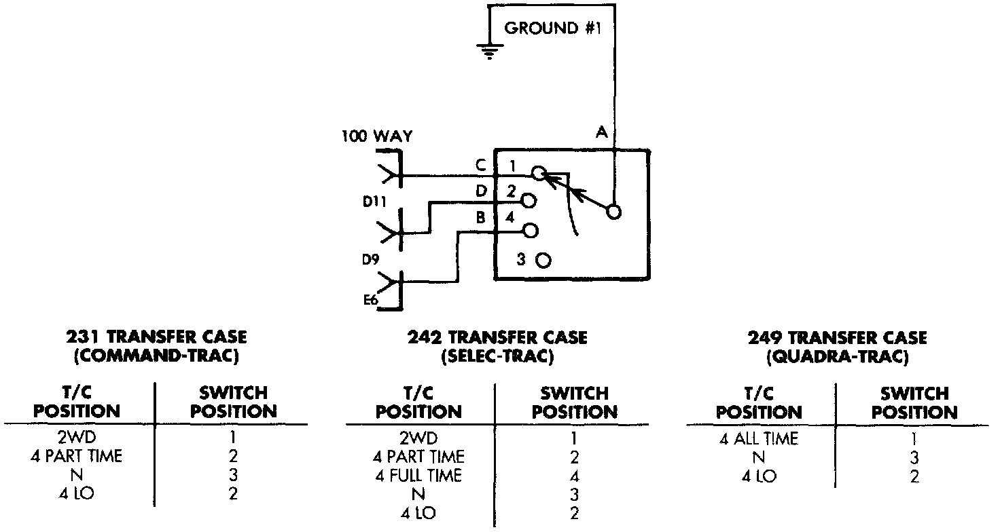
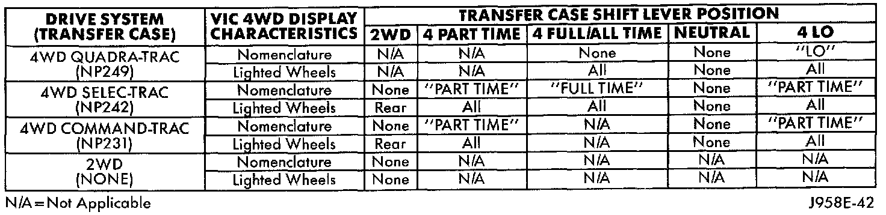

Vehicle Information Center
The Vehicle Information Center (VIC) has a number of display functions and features. The diagnosis found here addresses only those VIC messages and functions that are controlled by hard-wired inputs. To diagnose any internally controlled VIC function or feature, or any that are enabled by inputs on the CCD data bus network, use a DRB scan tool and the proper Computers and Control Systems/Body Control Module/Testing and Inspection Procedures.Coolant Level Low/Coolant Sensor Bad
If the problem being diagnosed is related to lamp accuracy, be certain to confirm that the problem is with the lamp and sensor and not with the engine coolant level. The actual engine coolant level should be checked before you proceed with lamp and sensor diagnosis.
WARNING: ON VEHICLES EQUIPPED WITH AIR-BAGS, REFER TO AIR BAGS AND SEAT BELTS/AIR BAGS BEFORE ATTEMPTING STEERING WHEEL, STEERING COLUMN, OR INSTRUMENT PANEL COMPONENT DIAGNOSIS OR SERVICE. FAILURE TO TAKE THE PROPER PRECAUTIONS COULD RESULT IN ACCIDENTAL AIR-BAG DEPLOYMENT AND POSSIBLE PERSONAL INJURY.
1. Unplug the coolant level sensor wire harness connector on the coolant reserve bottle. Check for continuity between the ground circuit cavity of the wire harness connector and a good ground. There should be continuity. If OK, go to Step 2. If not OK, repair the open circuit as required.
2. With the engine coolant at the proper level, check the resistance between the two terminals of the coolant level sensor. The resistance should be 3000 to 3500 Ohms. If OK, go to Step 3. If not OK, replace the faulty sensor.
3. Disconnect and isolate the battery negative cable. Remove the VIC module. Unplug the VIC module wire harness connector. Check for continuity between the engine coolant level switch sense circuit cavity of the VIC wire harness connector and a good ground. There should be no continuity If OK, go to Step 4. If not OK, repair the short circuit as required.
4. Check for continuity between the engine coolant level switch sense circuit cavities of the VIC wire harness connector and the engine coolant level sensor wire harness connector. If OK, replace the faulty VIC module. If not OK, repair the open circuit as required.
Four-Wheel Drive Display And Indicators/Service 4WD Switch
If the problem being diagnosed is related to an incorrect or no four-wheel drive display or indicator functions, be certain to confirm that the problem is with the VIC module and transfer case switch circuits, and not with a Powertrain Control Module (PCM) with an incorrect Vehicle Identification Number (VIN). This condition can only occur if the original PCM was replaced with a unit from another vehicle. The VIC module uses the VIN message received on the CCD data bus from the PCM to determine if the vehicle is equipped with two-wheel drive or four-wheel drive.
If a four-wheel drive vehicle has a two-wheel drive VIN entered in the PCM, the VIC will ignore all transfer case switch inputs. If a two-wheel drive vehicle has a four-wheel drive VIN entered in the PCM, the rear wheels in the VIC display will not light. Use a DRB scan tool and the proper Powertrain Management/Computers and Control Systems/Testing and Inspection/Diagnostic Charts Procedures to confirm the VIN in the PCM.
In addition, it should be noted that a VIC "Service 4WD Switch" message on a two-wheel drive vehicle can occur if a short circuit occurs in the transfer case switch circuits from the VIC module, in combination with a PCM having a four-wheel drive VIN. To locate the short circuit, start at Step 3 of the following diagnostic procedure. Two-wheel drive models do have the same VIC wire harness provisions as four-wheel drive models.
WARNING: ON VEHICLES EQUIPPED WITH AIRBAGS, REFER TO AIR BAGS AND SEAT BELTS/AIR BAGS BEFORE ATTEMPTING STEERING WHEEL, STEERING COLUMN, OR INSTRUMENT PANEL COMPONENT DIAGNOSIS OR SERVICE. FAILURE TO TAKE THE PROPER PRECAUTIONS COULD RESULT IN ACCIDENTAL AIR-BAG DEPLOYMENT AND POSSIBLE PERSONAL INJURY.
1. Unplug the wire harness connector at the transfer case switch. Check for continuity between the ground circuit cavity of the transfer case switch wire harness connector and a good ground. There should be continuity if OK, go to Step 2. if not OK, repair the open circuit as required.
Transfer Case Switch:

2. Check the transfer case switch continuity while shifting the transfer case shift lever to the proper positions. The switch continuity should be as shown. If OK, go to Step 3. If not OK, replace the faulty switch.
3. Disconnect and isolate the battery negative cable. Remove the VIC module as described. Unplug the VIC module wire harness connector.
4. Locate two pairs of wire harness connectors located in the wire harness leading to the VIC module. The wire harness connectors should be taped back to the harness. One pair of connectors are black with a single cavity. The other pair are red with two cavities. If the vehicle has the Quadra-Trac 4WD transfer case, only the red wire harness connectors should be joined. If the vehicle has the Command-Trac or Selec-Trac 4WD transfer case, only the black wire harness connectors should be joined. In all cases, only one pair of wire harness connectors should be joined. If OK, go to Step 5. If not OK, correct the wire harness connections as required.
VIC 4WD Display Characteristics:

5. Refer to the VIC 4WD Display Characteristics chart. Check the continuity of the circuit for the indicator lamp or wheel lamp that is not functioning between the VIC module wire harness connector and the transfer case switch wire harness connector. There should be continuity. If OK, replace the faulty VIC module. If not OK, repair the open circuit as required.
Rear Lamp Failure
Refer to the diagnosis for the lamp outage module in Lighting and Horns/Lamps to diagnose this feature of the VIC module.
Turn Signal ON
Refer to Lighting and Horns/Turn Signal and Hazard Warning Systems for more information on this feature of the VIC module. The VIC module uses its internal programming, and inputs from the combination flasher on the fused ignition switch output (L5) circuit, and a vehicle speed sensor (distance) message received on the Chrysler Collision Detection (CCD) data bus from the Powertrain Control Module (PCM) to control this message.
If testing of the L5 circuit between the VIC module wire harness connector and the combination flasher cavity in the junction block reveals no problem, use a DRB scan tool and the proper Computers and Control Systems/Body Control Module/Testing and Inspection Procedures to diagnose the VIC module and the CCD data bus.
Washer Level Low/Washer Sensor Bad
If the problem being diagnosed is related to lamp accuracy, be certain to confirm that the problem is with the lamp and sensor and not with the washer fluid level. The actual fluid level should be checked before you proceed with lamp and sensor diagnosis.
WARNING: ON VEHICLES EQUIPPED WITH AIR- BAGS, REFER TO PASSIVE RESTRAINT SYSTEMS BEFORE ATTEMPTING STEERING WHEEL, STEERING COLUMN, OR INSTRUMENT PANEL COMPONENT DIAGNOSIS OR SERVICE. FAILURE TO TAKE THE PROPER PRECAUTIONS COULD RESULT IN ACCIDENTAL AIR-BAG DEPLOYMENT AND POSSIBLE PERSONAL INJURY.
1. Unplug the washer fluid level sensor wire harness connector on the washer reservoir bottle. Check for continuity between the ground circuit cavity of the wire harness connector and a good ground. There should be continuity. If OK, go to Step 2. If not OK, repair the open circuit as required.
2. With the washer fluid at the proper level, check the resistance between the two terminals of the washer fluid level sensor. The resistance should be 3000 to 3500 ohms. If OK, go to Step 3. If not OK, replace the faulty sensor.
3. Disconnect and isolate the battery negative cable. Remove the VIC module as described. Unplug the VIC module wire harness connector. Check for continuity between the washer fluid level sense circuit cavity of the VIC module wire harness connector and a good ground. There should be no continuity. If OK, go to Step 4. If not OK, repair the short circuit as required.
4. Check for continuity between the washer fluid level sense circuit cavities of the VIC module wire harness connector and the washer fluid level sensor wire harness connector. If OK, replace the faulty VIC module. If not OK, repair the open circuit as required.